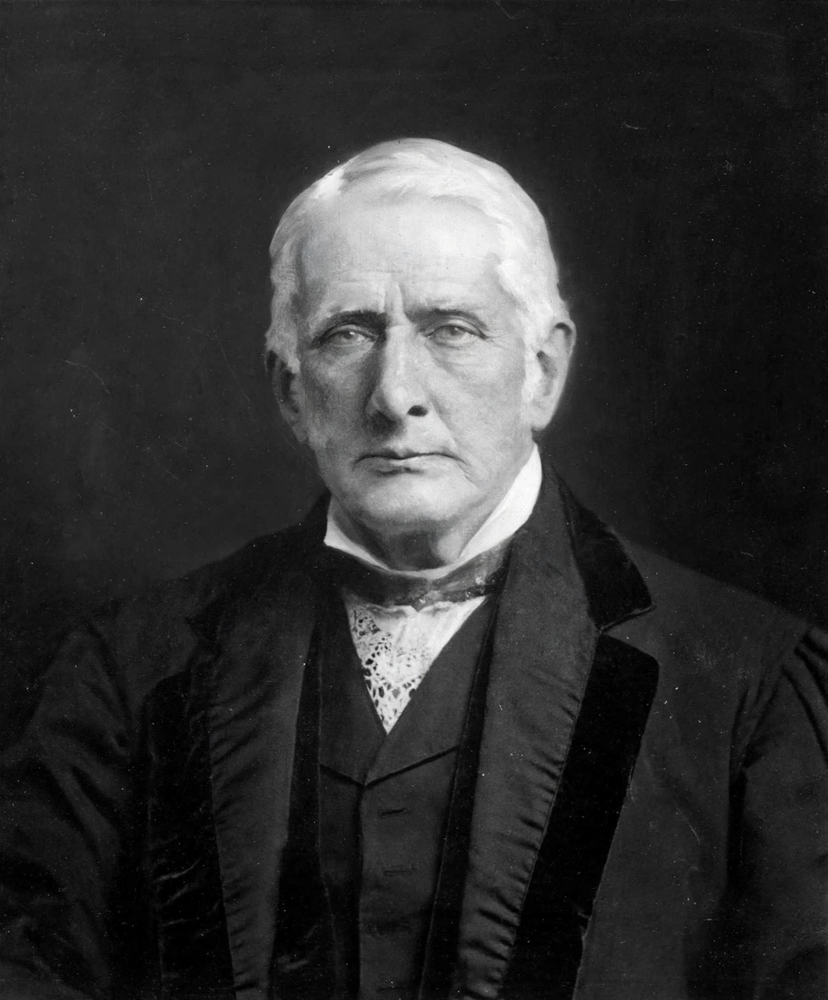

| Born | 7 February 1847 |
|---|---|
| Died | 22 December 1927 (aged 80) |
| Occupation | Judge, civil servant, legal writer |
| Known for | Bills of Exchange Act 1882; Sale of Goods Act 1893 |
Sir Mackenzie Dalzell Chalmers KCB CSI (7 February 1847 – 22 December 1927) was a British judge and civil servant. He is best known as the draftsman of major codifying statutes of English commercial law.
Educated at King's College London and Trinity College, Oxford, Chalmers was called to the Bar by the Inner Temple in 1869. He served as a county court judge and in India, and became Parliamentary Counsel's assistant and later Permanent Secretary of State for the Home Department (1903–1908), and a member of the Judicial Division of the Privy Council.
He drafted the Bills of Exchange Act 1882, the Partnership Act 1890, the Sale of Goods Act 1893, and the Marine Insurance Act 1906 — models for legislation throughout the Commonwealth. His textbooks on bills of exchange and sale of goods ran to many editions.